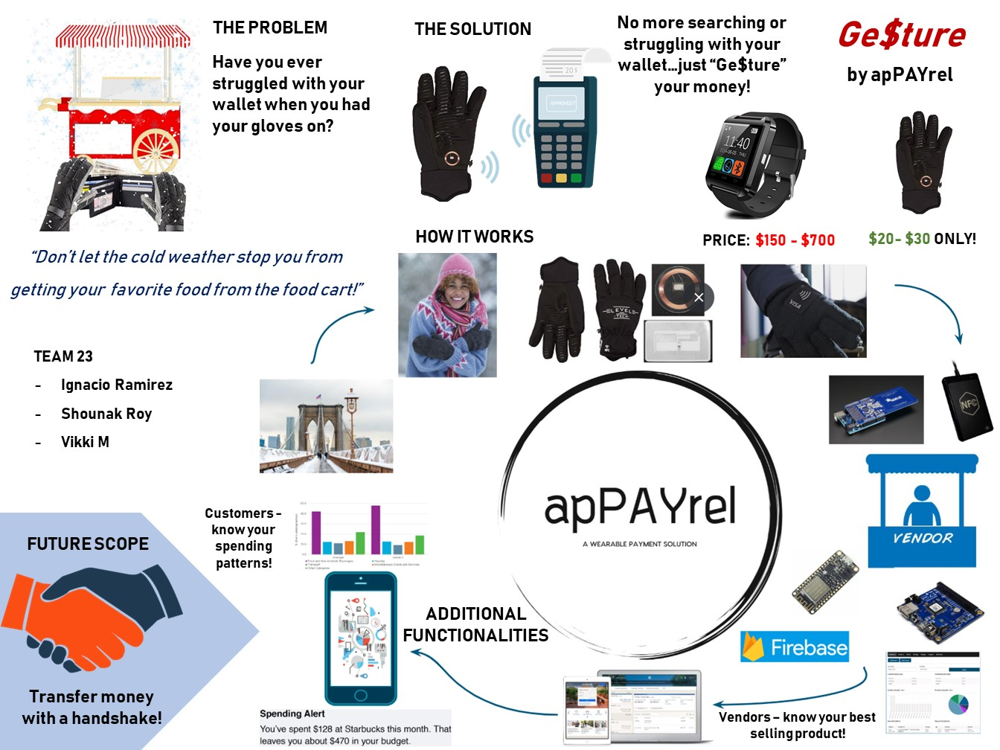
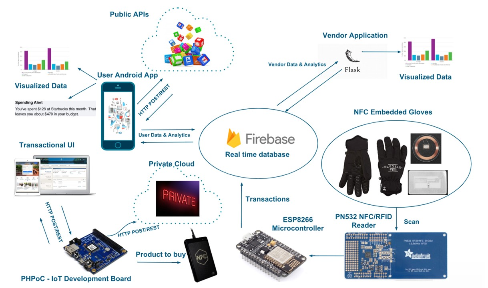
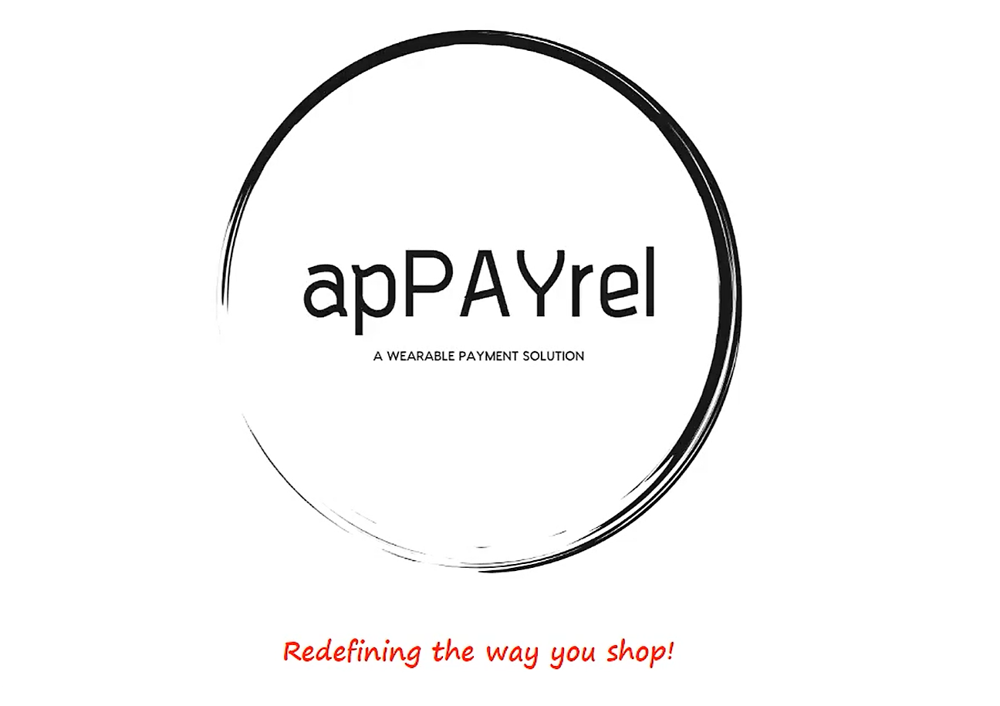
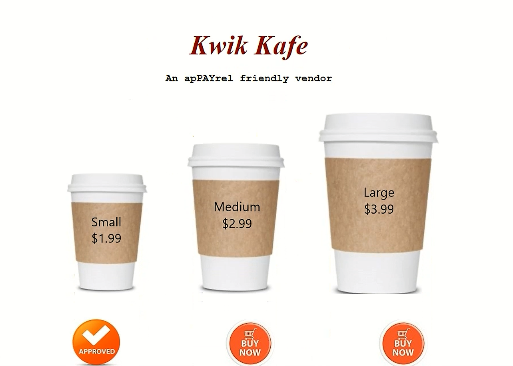
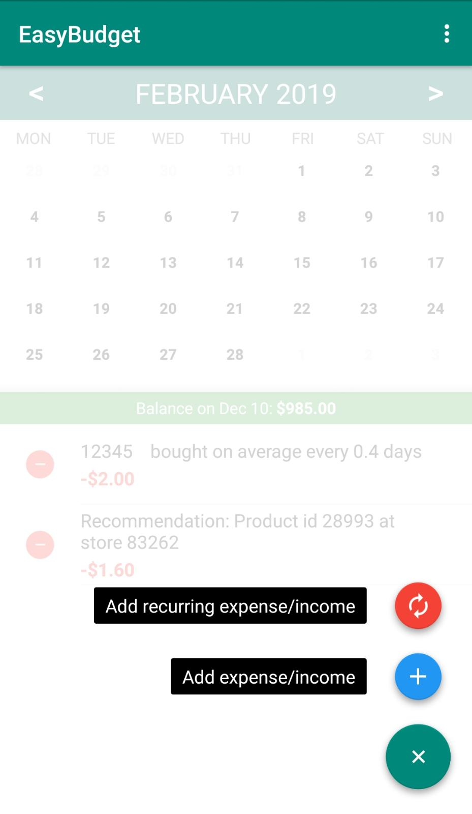

Project apPAYrel is a foray into the 'Active Fashion' and 'Smart Responsive Clothing' ecosystem. It is essentially an implementation of a wearable payment solution with the overarching vision that apPAYrel will encompass a suite of diverse smart apparels that allow users to make contact-less monetary transactions.
Problem Statement - Residents in cold climates worldwide often find it extremely inconvenient to perform monetary transactions because it involves either them struggling with their phones if they’re using an e-payment gateway, or worse, having to remove their gloves and going through the hassle of rummaging through their wallets/purses in the biting cold.
IoT Solution - The proof-of-concept involves a winter glove enabled with Near Field Communication (NFC) technology called Ge$ture that allows users to successfully complete payments merely by gesturing towards an NFC-enabled point-of-sale terminal. All transactions are linked to a mobile application that the user can access to view infographics on spending patterns and receive smart suggestions. We have also setup a user interface that mimics a vendor catalog and a web-based data analytics tool for the vendor to monitor product consumption and stay competitive in the market.
Although the idea was born to solve a specific societal pain, it can revolutionize active fashion upon mainstream adoption.
Motivation
There were 6 distinct driving factors that motivated this project - Importance, Relevance, Interest, Societal Value, Utility, Marketing Potential
apPAYrel is important because it is a smooth contact-less monetary transaction solution that makes consumers comfortable and by extension potentially boosts sales of the vendor. It has a highly relevant use case in cold climates worldwide with a case in point being New York City during winters. There is strong public interest because active fashion and smart responsive clothing is trending upwards in 2018 and is considered one of the next big things in the IoT domain.
The societal value lies in the fact that this is an engineering solution intended to directly benefit vast segments of society who are inconvenienced during transactions in cold climates. apPAYrel has widespread utility considering the infrastructure( NFC readers) is already in place in a lot of establishments. The only requirement is that payment services need to commercialize it. The marketing potential is massive because it is an easily adaptable hassle-free solution that requires no additional effort on the part of the user. Also the problem we’re trying to solve affects a huge population with the closest alternative being smart Watches that cost 100’s of dollars whereas a glove with an NFC embedded chip will be significantly cheaper.
System
The system comprises a web-based user interface mimicing a vendor catalog that is built using the PHP on Chip (PHPoC) programming language and IoT hardware platform. The PHPoC development board is connected to an ESP8266 microcontroller so that when a transaction is approved on the Vendor's end, the specific product information is available to the rest of the system.
The customer with an NFC-embedded glove then gestures towards the NFC-enabled point-of-sale terminal and the particular transaction is complete. The transaction info is pushed to an online database - Firebase, from which a mobile application on the customer's phone fetches the relevant data and displays the details of the transaction. A data analytics tool running within the application keeps track of these transactions and makes smart purchase recommendations to the customer.
A web-based data analytics tool is also set up for the vendor where he can monitor the time and frequency of purchase of different product types and also whether his competitors are selling the same product at a better price and as a result affecting his sales. This data allows him to make Quality of Service (QoS) and pricing decisions to stay afloat in the market.

apPAYrel Product Pitch
Architecture
 System Architecture of apPAYrel
Technical Components
1. Embedded System - NFC Tagged Winter Glove
- 13.56MHz NFC clear tag with small RFID chip and antenna passively powered by the reader/writer
2. Point of Sale Terminal - NFC Controller Shield
- Point-of-sale unit handled by the vendor to read and write to NFC tag embedded in glove
3. PHPoC Powered Interactive Online Vendor Catalog
- To select products that customers purchase and approve transactions
4. Online Database - Firebase
- To store transactional information that can be accessed for both Vendor and User side data analytics
5. Cloud-based Data Analytics Tool Housed in Mobile Application
- Detect spending patterns and provide visual infographics / suggestions for future transactions
6. Web-based Data Analytics Tool for Vendor
- To track product sales and provide information that will help the vendor stay competitive in the market
Prototype
Vendor User Interface -

An apPAYrel Compatible Vendor that has the necessary infrastructure - Logo and Tagline
 The vendor catalog where products can be selected and transactions approvedAndroid Application User Interface -
Application screen indicating balance associated with your NFC chip on a particular date
Product purchase information and smart recommendation for alternate products  Option to add one-time or recurring expenditures/income for better data analyticsProject Setup and Hardware Components -
Results
Project apPAYrel provides a comprehensive solution that caters to both the vendor and customer -
Benefits to the customers:
- Ease of Use:Enables ease of transaction for quick purchases without the hassle of removing their gloves and fetching their wallets or phones.
- Data Analytics: User-friendly mobile application to monitor transactions and get product recommendations based on the frequency of purchase of each product.
- Security: Customer can configure the glove through the mobile app to link with the bank account and has the ability to deactivate the glove through the app in case it is misplaced.
- Affordability: Low cost alternative to smart-watch payment methods – merely one tenth the price of an average smart watch!
Benefits to the apPAYrel-friendly vendors:
- Performance Monitoring: The transactions performed by the customer are automatically recorded into a database allowing the vendor to analyze the best-selling products.
- Stay Competitive: Vendor has access to information on the changes in customer preferences and their competence in the market.
- Meet Demands: The timestamps of transactions help the vendor to analyze the patterns in demand for each product and be better prepared to meet it.
Vendor Analytics
References
1. https://www.sporttechie.com/visa-payment-smart-winter-gloves-pyeongchang-olympics/
2. https://usa.visa.com/visa-everywhere/innovation/wearable-payment-technology.html
3. https://www.wareable.com/smart-clothing/best-smart-clothing
4. https://www.tearsheet.co/changing-payments/5-innovative-iot-payment-products
5. https://www.trendhunter.com/slideshow/responsive-clothing
6. https://www.adafruit.com/
7. https://www.hackster.io/
8. https://www.hackster.io/phpoc_man/smart-payment-system-for-parking-area-using-rfid-39c19c
9. https://edblogs.columbia.edu/eecse4764-001-2017-3/
10. https://www.instructables.com/id/Adafruit-IO-enabled-NFCRFID-Scanner/
Contact
Vigneswari Muthukumaresan: vm2546@columbia.edu
Ignacio Ramirez: ir2331@columbia.edu
Shounak Roy: shounak.roy@columbia.edu
Columbia University Department of Electrical Engineering
Instructor: Professsor Xiaofan (Fred) Jiang